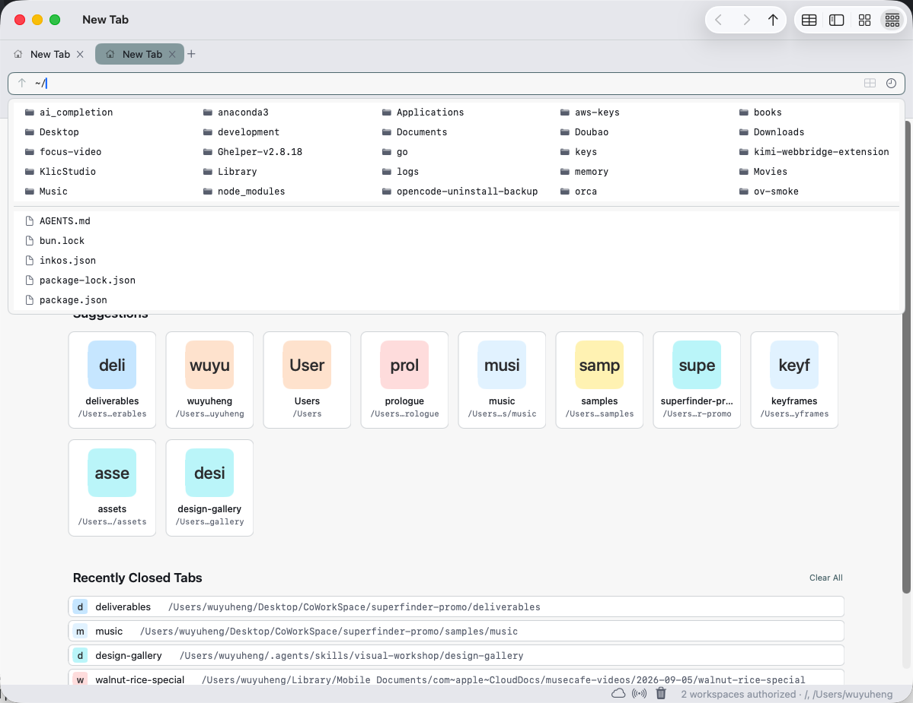

关掉。回来。
一切还在。
⌘Q 退出，标签组、四向拆好的窗格、暂存架里的引用，全部落盘。重开，原样回来。真浏览器都恢复会话——丢标签组的「浏览器」不合格。
整树还原
不只恢复标签：每棵窗格树的结构、比例、各自所在的文件夹一起回来。
崩溃也算数
不是「正常退出才保存」——快照带节流持续落盘，崩溃后与手动退出同等待遇。

给文件一个浏览器。
地址栏、标签页、四向窗格、暂存架——整套浏览器心智，长在 macOS 文件系统上。下面这台窗口是真的，上手试。
Saves: split structure + pane ratios + each pane's folder + view mode (no history stacks).
演示窗口为英文 UI——应用内可切换简体中文 / English
查找替换、正则、序号、大小写——每次改动都实时预览；撞名整行标红、一键排除，确认才执行，整批 ⌘Z 撤回。这个演示是真的，直接玩。
| Name | New Name |
|---|
演示数据 · 撞名判定与预览逻辑与应用内一致
⌘Q 退出，标签组、四向拆好的窗格、暂存架里的引用，全部落盘。重开，原样回来。真浏览器都恢复会话——丢标签组的「浏览器」不合格。
不只恢复标签：每棵窗格树的结构、比例、各自所在的文件夹一起回来。
不是「正常退出才保存」——快照带节流持续落盘，崩溃后与手动退出同等待遇。
详细列表、层级大纲、图标网格、画廊加胶片条——同一批文件四种密度，⌘1–⌘4 接力切换；空格调起系统 Quick Look。首屏的窗口里就能切。
大图区 + 贴底胶片条，三向联动；选中环是签名深描边，不是系统蓝。
图标大小四档、网格间距、标签位置、胶片条尺寸、排序方式——浮动小面板按当前视图裁剪，一次调好处处生效。

浏览器化的是操作，不是边界。
删除恒走系统废纸篓，应用内不存在绕过它的路径。不是默认设置，是写死的不变量。
产品里没有网络代码，没有统计上报。文件不出你的 Mac——这句话写在工程的每一层；本站同样零第三方请求。
移动、复制、重命名立即生效，⌘Z 静默撤回；每一次写动作都记在审计账上。账面由 1,458 项单元测试盯住——每个数字都能下钻到它来自哪个测试文件。
…其余 88 个测试文件在仓库 SuperFinderTests/ 中（GitHub 链接部署后填入）。
63 秒，没有旁白——让窗口自己演。
免费下载 · macOS 26 或更高版本 · 简体中文 / English 界面
GitHub 仓库地址将在仓库公开后填入——现在是占位。